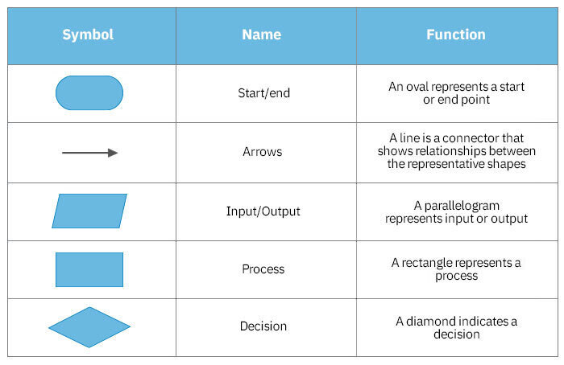

Flowchart (Vooskeemid)
Flowchart ehk vooskeem on graafiline diagramm, mis kujutab protsessi, süsteemi või
tegevuste jada samm-sammult. Iga samm tähistatakse kindla kujundiga ning kujundid
ühendatakse nooltega, mis näitavad protsessi kulgemise järjekorda.
Flowcharti eesmärk on muuta protsess visuaalselt arusaadavaks, lihtsustada analüüsi,
tuvastada kitsaskohti ning selgitada kasutajatele, kuidas mingi tegevus või süsteem töötab.
Kus vooskeeme kasutatakse?
Flowcharte kasutatakse laialdaselt nii tehnilistes kui ka mittetehnilistes valdkondades:
- tarkvaraarenduses algoritmide ja loogika modelleerimiseks;
- äriprotsesside kirjeldamiseks ja optimeerimiseks;
- tööstuses töövoogude juhtimiseks;
- koolitustel ja dokumentatsioonis protsessi visualiseerimiseks;
- analüüsi käigus vigade ja ebaefektiivsuse tuvastamiseks;
- tehisintellekti ja andmetöötluse protsesside kirjeldamisel.
Flowcharti põhilised kujundid
Flowcharte moodustavad standardsed elemendid, millest igaühel on kindel tähendus.
Allpool on toodud levinumad kujundid ja nende kasutus:
- Oval – Algus / Lõpp
Tähistab protsessi algust või lõppu.
- Ristkülik – Tegevus (Process)
Näitab sammuna tehtavat tegevust või arvutust.
- Romb – Otsus (Decision)
Tingimus või kontrollpunkt, mille tulemusel saab protsess kahte eri suunda liikuda (jah/ei).
- Parallellogramm – Sisend/Väljund (Input/Output)
Näitab kasutajasisestust, väljundit ekraanile või andmete lugemist/kirjutamist.
- Nool – Protsessi suund
Ühendab kujundid ning näitab tegevuste järjekorda.

Kujundite kasutusnäide
Näide lihtsast voost:
- Start →
- Kasutaja sisestab andmed →
- Kontroll (kas andmed on õiged?) →
- Kui jah → töötle andmed → lõpp
- Kui ei → kuva veateade → naase sisestusele
Seos Bitcoin äpi tehtud vooskeemiga
Selles materjalis viidatakse varem koostatud vooskeemile, mis kirjeldab Bitcoin äpi
tööloogikat (kasutaja sisselogimine, rahakoti haldus, tehingute kontroll jms).
Flowcharti elemente kasutatakse täpselt samamoodi:
- Algus → kasutaja avab rakenduse
- Kasutaja sisestab parooli → (Sisend)
- Kontroll: Kas parool on korrektne? → (Otsus)
- Kui korrektne → Lae kasutaja rahakoti andmed (Protsess)
- Kui mitte → Kuva veateade (Väljund)
- Lõpp
Bitcoin äpi vooskeem on seega praktiline näide flowcharti kasutamisest reaalses projektis.
Viited